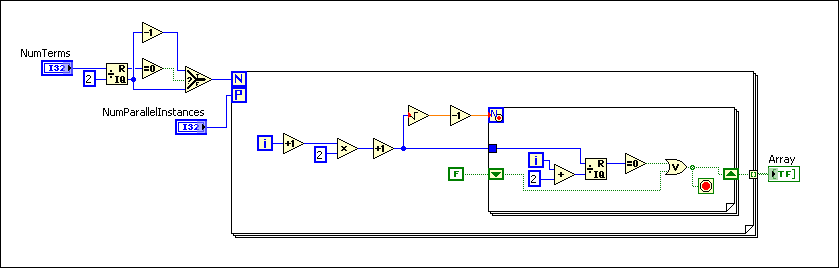

A hyperthreaded computer has a single processor but acts as a computer with a multiprocessor. (Windows) Hyperthreading is a feature of some versions of the Intel Pentium 4 and later. When you launch the Windows Task Manager on a hyperthreaded computer and click the Performance tab, the Windows Task Manager displays the usage history for two CPUs. (macOS) Launch the Activity Monitor to check performance.
A hyperthreaded processor acts like multiple processors embedded on the same microchip. Some of the resources on the chip are duplicated, such as the register set. Other resources are shared, such as the execution units and the cache. Some resources, such as the buffers that store micro operations, are partitioned, with each logical processor receiving a portion.
Optimizing an application to take advantage of hyperthreading is similar to optimizing an application for a multiprocessor system, also known as a multi-core, multiple CPU, or SMP system, but there are some differences. For example, a hyperthreaded computer shares the execution units, and a dual-processor computer contains two complete sets of execution units. Therefore, any application that is limited by floating-point execution units performs better on the multiprocessor computer because you do not have to share the execution units. The same principle applies with cache contention. If two threads try to access the cache, the performance is better on a multiprocessor computer, where each processor has its own full-size cache.
The LabVIEW execution system is already built for multiprocessing. In text-based programming languages, to make an application multithreaded, you have to create multiple threads and write code to communicate among those threads. LabVIEW, however, can recognize opportunities for multithreading in VIs, and the execution system handles multithreading communications for you.
The following example takes advantage of the LabVIEW multithreaded execution system.
In this VI, LabVIEW recognizes that it can execute the two loops independently, and in a multiprocessing or hyperthreaded environment, often simultaneously.
The following example calculates prime numbers greater than two.
The block diagram evaluates all the odd numbers between three and Num Terms and determines if they are prime. The inner For Loop returns TRUE if any number divides the term with a zero remainder.
The iterations of the outer For Loop do not depend on each other. If the iterations of a For Loop can execute in any order, you can enable loop iteration parallelism on the For Loop to improve performance. In this example, the outer For Loop is a good candidate for iteration parallelism because it performs a significant amount of computation per iteration.
To enable parallelism on this VI, right-click the For Loop and select Configure Iteration Parallelism from the shortcut menu. This action displays the For Loop Iteration Parallelism dialog box.
On a multiprocessor computer, parallel loop iterations allow LabVIEW to take advantage of multiple processors to execute the For Loop faster. The parallel version of this example is more efficient because LabVIEW can simultaneously execute different codes.

Notice that these two example VIs do not include code for explicit thread management. The LabVIEW dataflow programming paradigm allows the LabVIEW execution system to run the parallel loop instances in different threads.
Optimizing the performance of an application for a hyperthreaded computer is nearly identical to doing so for a multiprocessor computer. However, differences exist because a hyperthreaded computer shares some resources between the two logical processors, such as the cache and execution units. If you think a shared resource on a hyperthreaded computer limits an application, test the application with an advanced sampling performance analyzer, such as the Intel VTune.